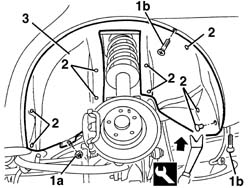
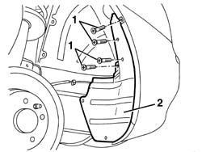

7055B43 REAR WHEEL ARCH liner (one), left or right - R.R.
- Path
- Procedures > 70 FITTINGS > 7055 MOULDING AND PROTECTION > 7055B exterior protections > 7055B43 REAR WHEEL ARCH liner (one), left or right - R.R.
- Kind
- repair procedure (removal / refitting; the operation number is the code)
- Applies to
- all engines; all production periods
- Interactive page
- https://sloeber94.github.io/elrnDB-a156/en/#/3238965
Applies to: all engines; all production periods
 Removing
Removing
 Refitting
RefittingPlace the vehicle on a lift.
Remove the rear wheel.
1. Undo the nut (1a) and bolts (1b).
2. Release the retaining buttons using the special tool.
 | Name | Country |
|---|---|---|
2 | Scraper blade | 1.823.015.000 |
3. Remove the additional wheelarch from its seating.

Applies to: all engines; all production periods
1. If necessary, withdraw the bolts from the rear wheelarch.
2. Remove the rear wheelarch.

Applies to: all engines; all production periods
Refitting
RemovingCheck that the additional rear wheelarch is undamaged.
If removed, fit the rear wheelarch in its seating and secure it with the bolts.
Fit the additional rear wheelarch in its seating and fix it with the retaining buttons.
Tighten the nut and bolts.
Refit the rear wheel.
Remove the vehicle from the lift.